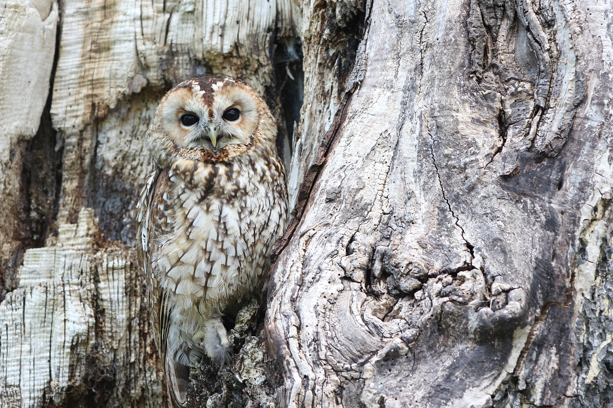

Arcahive Text

눈먼 올빼미
나는 생각이 정지되었다. 내 안에서 새롭고 이상한 형태의 생명이 느껴졌다. 어떻게 해서 그렇게 되었는지는 모르지만 내 존재는 내 주위의 모든 생명들과 연결되었다. 내 주위에서 가볍게 떨고 있는 모든 그림자들과. 나는 외부세계와, 모든 살아 있는 것들과 누구도 침범할 수 없는 친밀한 교감을 했다. 그리고 보이지 않는 하나의 복잡한 전달 체계가 나와 자연의 모든 요소들 사이에 끊임없이 맥박 치는 흐름을 전달했다. 이제 나에게는 낯설게 느껴지는 관념도, 개념도 없었다. 과거의 화가들의 비밀도, 난해한 철학의 수수께끼도, 고대의 어리석은 사상과 희귀종들도 쉽게 파악할 수 있었다. 그리고 그 순간 나는 땅과 하늘의 공전과, 식물들의 발아와, 동물들의 본능적인 움직임과 하나가 되었다. 과거와 미래, 먼 것과 가까운 것이 내 마음속 생명 안에서 하나로 연결되었다.
이런 상황에 처하면 모든 인간은 단단히 굳어진 습관 속으로, 그 자신의 특정한 열정 속으로 도피하기 마련이다. 주정뱅이는 술로 자신을 마비시키고, 작가는 글을 쓰고, 조각가는 돌에 달려든다. 각자 자신을 흥분시키는 것에 의지해 마음의 짐으로부터 해방되는 것이다. 진정한 예술가가 걸작품을 탄생시킬 수 있는 것도 바로 이러한 순간들이다. 하지만 내가, 나처럼 열의 없고 무기력한 사람이, 필통 뚜껑이나 장식하는 자가 무엇을 할 수 있단 말인가? 고작해야 아무 생명 없이 번쩍이는 작은 그림, 그것도 다 똑같은 그림이나 그리는 나 같은 자가 무슨 걸작품을 창조한다는 말인가? 그러나 나는 내 전 존재 안에서 넘쳐흐르는 열정과 언어로 표현할 수 없는 영감을 느꼈다. 영원히 감겨진 그 눈을 종이에 기록하고 싶은 갈망이 밀려왔다. 그 그림을 언제까지나 간직하고 싶었다. 그 갈망의 힘이 나에게 그것을 행동에 옮기라고 강요하고 있었다. 그 충동을 거부할 수가 없었다. 어떻게 그것을 거부할 수 있단 말인가? 화가인 내가, 죽은 시신과 한 방에 갇혀 있는데. 그 생각이 내 안에 특별한 기쁨을 불러일으켰다.